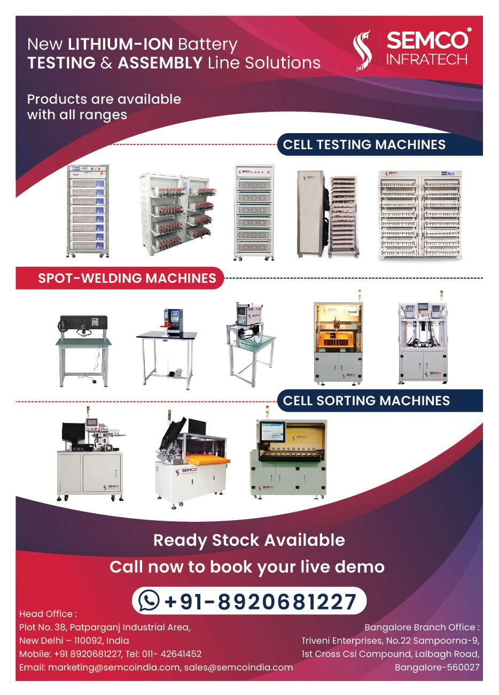

The demand for lithium-ion batteries is high and we need to excel in the technologies for making lithium-ion batteries. An automatic production line is one of the best solutions that comes to my mind while talking about this. We need an automatic production line as the need for batteries is rising.
The reason for batteries being in this high demand is that most of the modern equipment is becoming compact and battery-operated. With increased environmental consciousness, the marketing and use of new energy vehicles are becoming increasingly widespread.
As a result, there is an increasing demand for efficient and durable lithium battery modules. This article will discuss key technology and future developments in lithium battery module production processes.
Batteries for New Age Energy Demand
Lithium-ion batters are in demand due to their energy density, long life, light and compact weight, and excellent environmental protection performance. The components of lithium-ion batteries are also very simple. These batteries include positive materials, negative materials, electrolytes, and diaphragms. Almost all of them work on a similar principle in which lithium-ion gets transferred from the positive side which charging and vice versa while discharged.
At present, many types of lithium batteries have appeared on the market, such as lithium cobaltite batteries, lithium iron phosphate batteries, ternary lithium batteries, etc. These different types of lithium batteries vary in terms of battery voltage, energy density, cycle life, and safety, and are selected according to actual needs.
Lithium Battery Module
A lithium battery module is a battery module composed of multiple lithium battery cells connected by a specific circuit. Generally speaking, lithium battery modules should have the following characteristics:
1. High energy density
2. Fast charging and discharge characteristics
3. Low self-discharge rate
4. Good stability
5. Sufficient cycle life

Lithium Battery Module Production Line
To manufacture a vast quantity of premium lithium battery modules, contemporary automated production lines must be implemented to enhance productivity and product quality. The lithium battery module production line primarily encompasses a series of processes, including:
- Standardized Production Unit Manufacturing: To enhance consistency in lithium-ion battery production, continued improvements in standardization are necessary.
- Cell Manufacturing: Currently, the process primarily involves bonded polar sheets, hot pressing forming, shaping, and pressing the battery terminal, among other traditional methods.
- Mold Assembly: Tailored to customer requirements, the design encompasses the module's appearance, selection of battery cell model, quantity, and their combination.
- Module Testing: The module's physical and electrical performance is thoroughly examined.
- Packaging: The mold is assembled into the complete vehicle, providing the entire battery connection, and forming the power battery system.
Future Trends
With the ongoing expansion and technological advancements in the new energy vehicle market, the lithium battery module production line will exhibit more technical trends. For instance:
- Nano-Coating Technology: Applying nano-coating on the battery's positive and negative materials can enhance energy density and battery life.
- High-Throughput Production Technology: Implementing process standardization and assembly-line production methods can significantly boost production efficiency and reduce costs.
- Artificial Intelligence Technology: Through data processing and analysis, the intelligent production management of lithium battery modules can be realized, further improving production efficiency.
- Advanced Conductive Materials: The use of new conductive materials, such as carbon nanotubes, can enhance battery performance while simultaneously reducing costs.
Conclusion
In the future, the lithium battery module production line will prioritize the innovation and optimization of processes and materials to achieve higher production efficiency and product quality. Additionally, it will focus on sustainable development and environmental protection performance. We are hoping for better and then the best.